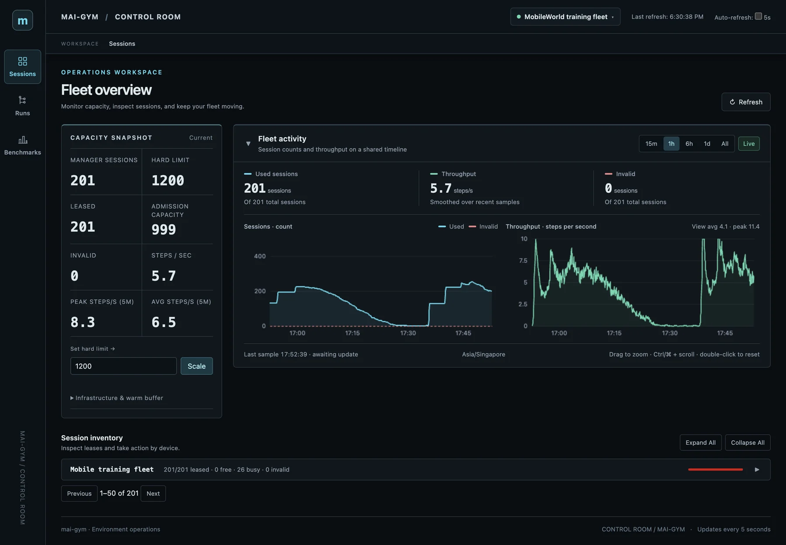

Quickstart
Install the MAI-Gym CLI and run your first verified GUI agent evaluation—locally on Mocked Apps (no Docker/KVM) or on MobileWorld—plus visual replay and optional online RL.
MAI-Gym is an open, all-in-one platform for evaluating GUI agents (mai-gym eval), collecting interaction trajectories (mai-gym rollout), and running online reinforcement learning (mai-gym train) across Mobile, Computer, and Web environments—scaling from a single local browser or emulator to 20,000+ concurrent cloud instances.
Follow the steps below to go from a clean checkout to your first verified GUI agent evaluation. Choose Option A for a zero-Docker local tryout with Mocked Apps, or Option B for a full Android emulator evaluation on MobileWorld and optional online RL training.
Using a coding agent (Claude Code, Codex, Cursor)? Agent-readable setup guides live under skills/README.md. Open this repository in your coding agent to automate benchmark preparation, reset checks, evaluation, and training bring-up.
1. Install the CLI#
Requires Python 3.12+ and uv (curl -LsSf https://astral.sh/uv/install.sh | sh on Linux/macOS). From the repository root:
git clone https://github.com/Tongyi-MAI/MAI-Gym.git
cd MAI-Gym
uv sync --locked --python 3.12
uv run mai-gym --helpConfirm that the help output lists serve, eval, rollout, and train.
If an existing environment reports Failed to spawn: mai-gym, restore the CLI entry point with:
uv sync --locked --python 3.12 --reinstall-package mai-gym2. Option A — Fast Local Tryout: Mocked Apps (No Docker or KVM)#
This repository bundles 42 browser-based Novel Apps (837 verified tasks with deterministic verifiers and reference oracle trajectories) under resources/novel-apps/. Run an end-to-end evaluation on macOS or Linux using only Chromium and an OpenAI-compatible vision model endpoint:
uv run playwright install chromium
export MODEL_URL="http://127.0.0.1:8000/v1"
export MODEL_NAME="Tongyi-MAI/MAI-Gym-9B"
export OPENAI_API_KEY="your-api-key" # if required
uv run mai-gym eval --config configs/mocked-apps.yaml --benchmarks mocked-apps \
--model "$MODEL_URL" --model-name "$MODEL_NAME" --trials 1configs/mocked-apps.yaml launches a local web backend and manager, executes kestrel_bank/T01_freeze in headless Chromium, verifies the final app state, and writes the full-success outcome and weighted partial score to the printed results.json. See Mocked Apps to select other apps/tasks or run all 837 tasks.
3. Option B — MobileWorld Evaluation (Android Emulator)#
Start a MobileWorld backend#
Deploying across multiple nodes? Follow the Kubernetes Fleets guide and pass the fleet manager URL in eval.yaml.
On a Linux x86_64 host with Docker and KVM enabled, launch a single Android emulator backend (skip to the curl checks if you already have a running backend):
MW_SRC="$HOME/MobileWorld"
git clone --depth 1 https://github.com/Tongyi-MAI/MobileWorld.git "$MW_SRC"
cp -i "$MW_SRC/.env.example" "$MW_SRC/.env"
uv run --directory "$HOME" --project "$MW_SRC" --python 3.12 mw env run --count 1 \
--name-prefix mai-gym-quickstart --backend-start-port 6800 \
--image ghcr.io/tongyi-mai/mobile_world:v1 --env-file "$MW_SRC/.env"Initialize the emulator and verify that SetAlarmTask is registered:
MOBILEWORLD_URL=http://127.0.0.1:6800
curl -fsS "$MOBILEWORLD_URL/init?device=emulator-5554"
curl -fsS "$MOBILEWORLD_URL/health"
curl -fsS "$MOBILEWORLD_URL/task/list" | uv run python -m json.toolIf your task profile differs, pick any GUI-only task ID from the returned list and use it consistently below. See Mobile Benchmarks for an overview or skills/envs/mobileworld.md for immutable profile lock setup.
Configure and evaluate MAI-Gym-9B#
Download Tongyi-MAI/MAI-Gym-9B and copy the sample configurations into a working directory outside the checkout:
EVAL_DIR="$HOME/mai-gym-eval"
DATA_DIR="$HOME/mai-gym-data"
mkdir -p "$EVAL_DIR" "$DATA_DIR"
uvx --from huggingface-hub hf download Tongyi-MAI/MAI-Gym-9B --local-dir "$DATA_DIR/hf-model"
cp -i configs/eval.yaml configs/mobileworld.yaml "$EVAL_DIR/"Configure $EVAL_DIR/eval.yaml to run SetAlarmTask:
model:
name: Tongyi-MAI/MAI-Gym-9B
benchmarks:
mobileworld:
manager_config: mobileworld.yaml
num_envs: 1
tasks: [SetAlarmTask]Ensure $EVAL_DIR/mobileworld.yaml points to your backend URL (http://127.0.0.1:6800):
devices:
- name: local-mobileworld
env_type: mobileworld
connection:
attach:
backends:
- url: http://127.0.0.1:6800
manager:
port: 8090Run a 1-trial evaluation (the CLI automatically launches and tears down SGLang for local Hugging Face checkpoints):
uv run --with sglang mai-gym eval --config "$EVAL_DIR/eval.yaml" \
--model "$DATA_DIR/hf-model" --benchmarks mobileworld --trials 1 \
--output "$EVAL_DIR/runs"Using an existing OpenAI-compatible API endpoint instead of local SGLang? Skip the checkpoint download and pass the API base URL and model ID directly:
export OPENAI_API_KEY="your-api-key" # if required
uv run mai-gym eval --config "$EVAL_DIR/eval.yaml" \
--model http://127.0.0.1:8000/v1 --model-name Tongyi-MAI/MAI-Gym-9B \
--benchmarks mobileworld --trials 1 --output "$EVAL_DIR/runs"Check the printed results.json (success_rate: 1.0 and unscored_trials: 0 indicate native success).
4. Inspect Results Visually in the Control Room Dashboard#
Every benchmark score and RL rollout batch traces back to live fleet telemetry and step-by-step screenshots in the embedded Rust Trajectory Dashboard. Launch the dashboard against your trajectory root to monitor active sessions, compare checkpoints, and inspect drawn click/drag overlays alongside model reasoning traces and deterministic verifier criteria:


See Trajectory Dashboard for all four views (Trajectory Replay, Run Explorer, Fleet Overview, Benchmark Matrix), build steps, and the HTTP diagnosis API.
5. Train a GUI Agent with Online RL (Optional)#
To verify end-to-end online RL (GRPO) on a single MobileWorld task (QuickstartOpenSettings, using examples/mobileworld/open_settings.py):
Register the custom task in your MobileWorld container (or via live
POST /task/registeron the customized MobileWorld image):bashMW_CONTAINER=mai-gym-quickstart_0 MOBILEWORLD_URL=http://127.0.0.1:6800 docker cp examples/mobileworld/open_settings.py \ "$MW_CONTAINER:/app/service/src/mobile_world/tasks/definitions/quickstart_open_settings.py" docker restart "$MW_CONTAINER" curl -fsS --retry 60 --retry-all-errors --retry-delay 2 "$MOBILEWORLD_URL/init?device=emulator-5554" curl -fsS "$MOBILEWORLD_URL/task/goal?task_name=QuickstartOpenSettings"Start a persistent environment manager in a separate terminal:
bashuv run mai-gym serve --config "$HOME/mai-gym-eval/mobileworld.yaml"Prepare the task pool and starter config (reusing
$HOME/mai-gym-data/hf-modelfrom Step 3):bashTRAIN_DIR="$HOME/mai-gym-data" mkdir -p "$TRAIN_DIR/runs" cp -i configs/train-quickstart.yaml "$TRAIN_DIR/train.yaml" printf '%s\n' '{"prompt":"Open the Android Settings app and leave it in the foreground.","label":"","metadata":{"task_id":"QuickstartOpenSettings","env_type":"mobileworld"}}' \ > "$TRAIN_DIR/mobileworld.jsonl"Launch training inside the prebuilt Slime container on a 4-GPU Linux host:
bashdocker run --rm -it --gpus all --ipc=host --network=host \ -v "$PWD:/workspace/MAI-Gym" -w /workspace/MAI-Gym -e MAI_GYM_ROOT=/workspace/MAI-Gym \ -v "$TRAIN_DIR:/data:ro" -v "$TRAIN_DIR/runs:/runs" \ ghcr.io/tongyi-mai/mai_gym_slime:v1 bashInside the container:
bashpython -m pip install --no-deps -e . ray start --head mai-gym train --config /data/train.yaml
After round 1 finishes, the exported Hugging Face checkpoint is saved on the host under $TRAIN_DIR/runs/first-run/hf/.
CLI at a Glance#
| Command | Purpose | Primary Guide |
|---|---|---|
mai-gym serve | Start a persistent environment manager serving local, Docker, SSH, or Kubernetes backends | Kubernetes Fleets · Benchmarks Overview |
mai-gym eval | Run single- or multi-benchmark evaluations with native metrics and pass@N reports | Evaluation Guide |
mai-gym rollout | Execute tasks directly for agent debugging, trajectory collection, and controlled retries | Rollout CLI |
mai-gym train | Launch online RL training (GRPO, DAPO, GSPO, REINFORCE++, SAO, PPO) via Slime | Online RL Training |